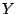
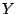

The Rayleigh-Ritz method finds the stationary values of the
Rayleigh quotient, called Ritz values, on a given trial
subspace as optimal, in some sense, approximations to
eigenvalues of a Hermitian operator  . When a trial subspace
is invariant with respect to
. When a trial subspace
is invariant with respect to  , the Ritz values are some of
the eigenvalues of
, the Ritz values are some of
the eigenvalues of  . Given two finite dimensional subspaces
. Given two finite dimensional subspaces
 and  of the same dimension, such that
and  of the same dimension, such that  is an invariant
subspace of
is an invariant
subspace of  , the absolute changes in the Ritz values of
, the absolute changes in the Ritz values of  with respect to
with respect to  compared to the Ritz values with respect
to represent the absolute eigenvalue approximation error.
compared to the Ritz values with respect
to represent the absolute eigenvalue approximation error.
We estimate the error in terms of the principal angles
between  and . There are several known results of this
kind, e.g., for the largest (or the smallest) eigenvalues of
and . There are several known results of this
kind, e.g., for the largest (or the smallest) eigenvalues of
 , the maximal error is bounded by a constant times the sine
squared of the largest principal angle between
, the maximal error is bounded by a constant times the sine
squared of the largest principal angle between  and . The
constant is the difference between the largest and the
smallest eigenvalues of
and . The
constant is the difference between the largest and the
smallest eigenvalues of  , called the spread of the spectrum
of
, called the spread of the spectrum
of  .
.
We prove that the absolute eigenvalue error is
majorized by a constant times the squares of the sines of
the principal angles between the subspaces  and , where
the constant is proportional to the spread of the spectrum
of
and , where
the constant is proportional to the spread of the spectrum
of  , e.g., for Ritz values that are the largest or smallest
contiguous set of eigenvalues of
, e.g., for Ritz values that are the largest or smallest
contiguous set of eigenvalues of  , we show that the
proportionality factor is simply one. Our majorization
results imply a very general set of inequalities, and some
of the known error bounds follow as special cases.
Majorization results of this kind are not apparently known
in the literature and can be used, e.g., to derive novel
convergence rate estimates of the block Lanczos method.
, we show that the
proportionality factor is simply one. Our majorization
results imply a very general set of inequalities, and some
of the known error bounds follow as special cases.
Majorization results of this kind are not apparently known
in the literature and can be used, e.g., to derive novel
convergence rate estimates of the block Lanczos method.